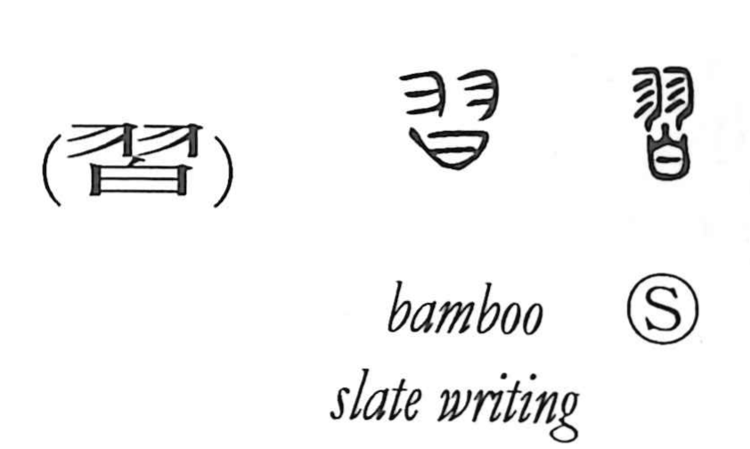

習

Kun: narau | On: shuu
to learn ・ practice ・ habit ・ custom
Explanation
習 combines 羽, feathers, with 曰, a vessel containing a prayer. The feathers are rubbed repeatedly over the vessel to stimulate the prayer’s power and bring its effect into action. The lower part later takes the familiar shape 白.
The important movement is repetition. The rite is performed again and again, giving practice, learning through repeated action, and becoming accustomed to something. What is repeated accumulates into a habit or an established custom.
Repeated contact can also become overfamiliarity. In the sacred setting, continually pressing the prayer could amount to treating the divine power too lightly. This gives the older senses of familiarity and slight regard alongside the ordinary learning and practice.